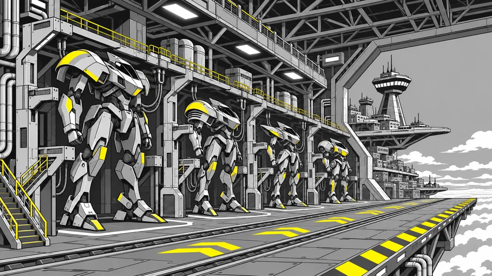
The Deck
Above the clouds, pilots launch their frames from the starting grid. H4J1ME trains here, and TSUB4S4 is the racer everyone is trying to catch.
Meet TSUB4S4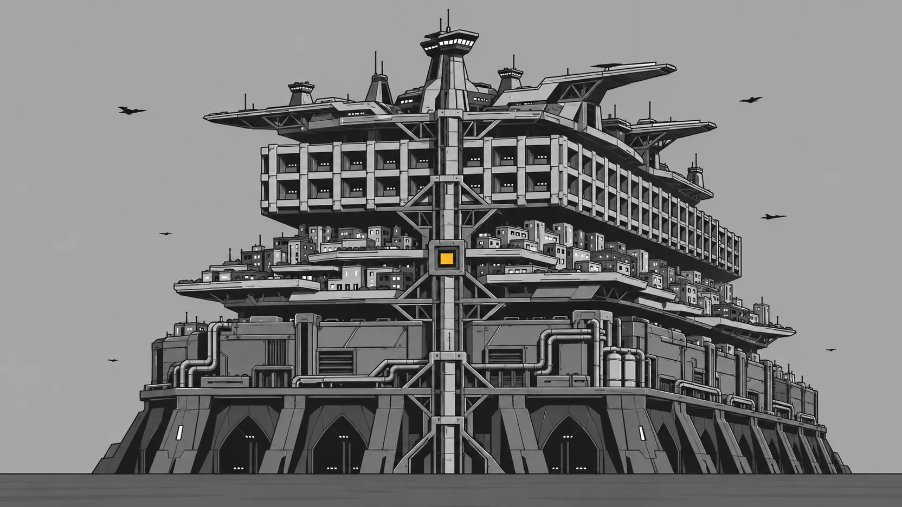
Future is a city stacked in five districts. Each has its own sound and way of dressing. Above them all, a pirate signal is reaching our time.
Explore the cityFrom the launch deck above the clouds to the machine cathedral below the foundry. Select a level on the map to go inside.
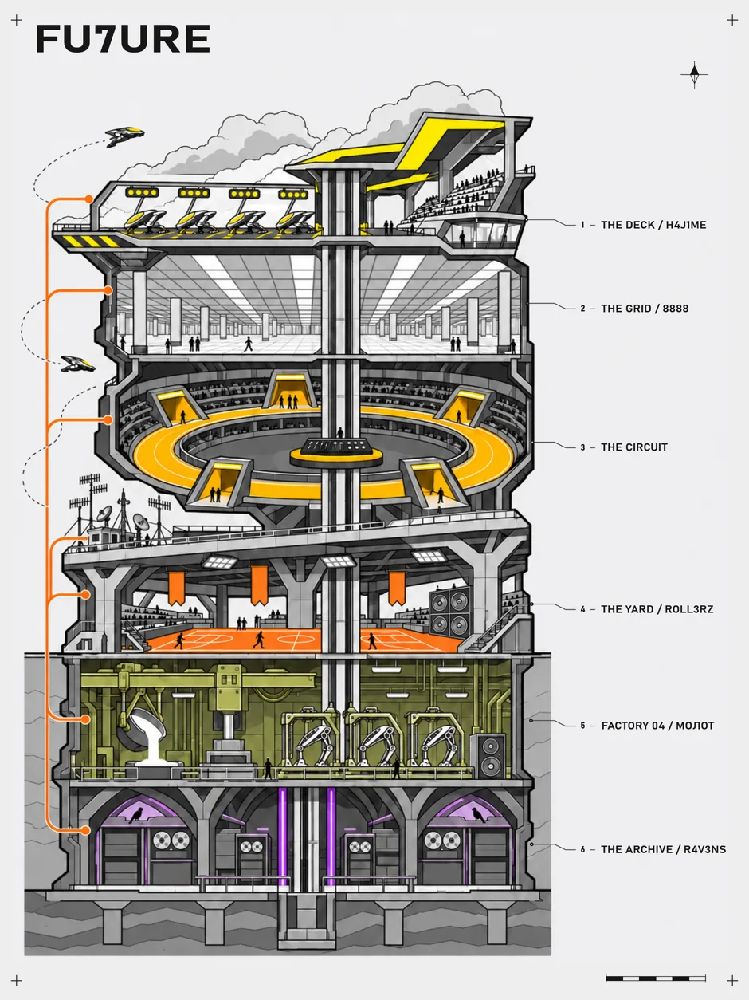

Above the clouds, pilots launch their frames from the starting grid. H4J1ME trains here, and TSUB4S4 is the racer everyone is trying to catch.
Meet TSUB4S4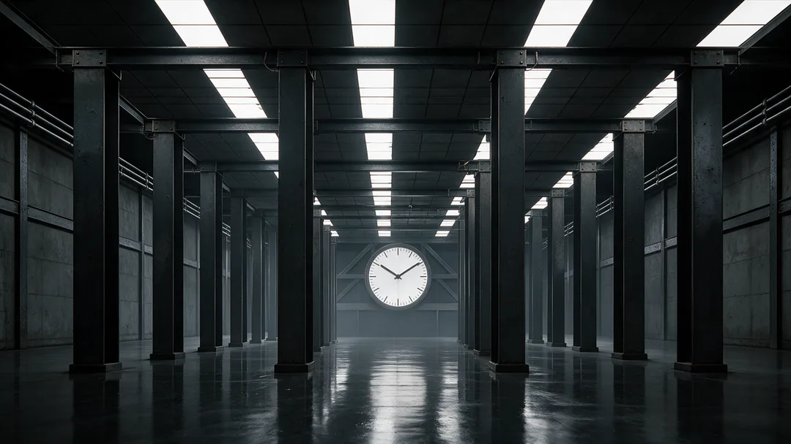
A white hall of repeating columns where the city keeps time. QU4NT knows every district’s rhythm well enough to notice when the clocks are being reset.
Meet QU4NT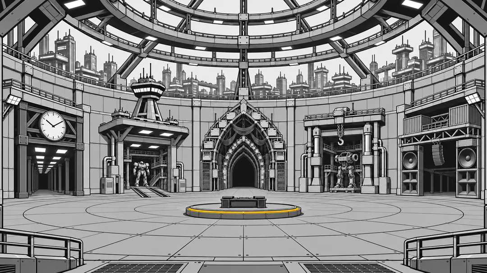
Five gates open onto one floor. Built around the city’s core, The Circuit is the only arena where every district can meet and the place a Clash brings both crowds together.
How a Clash works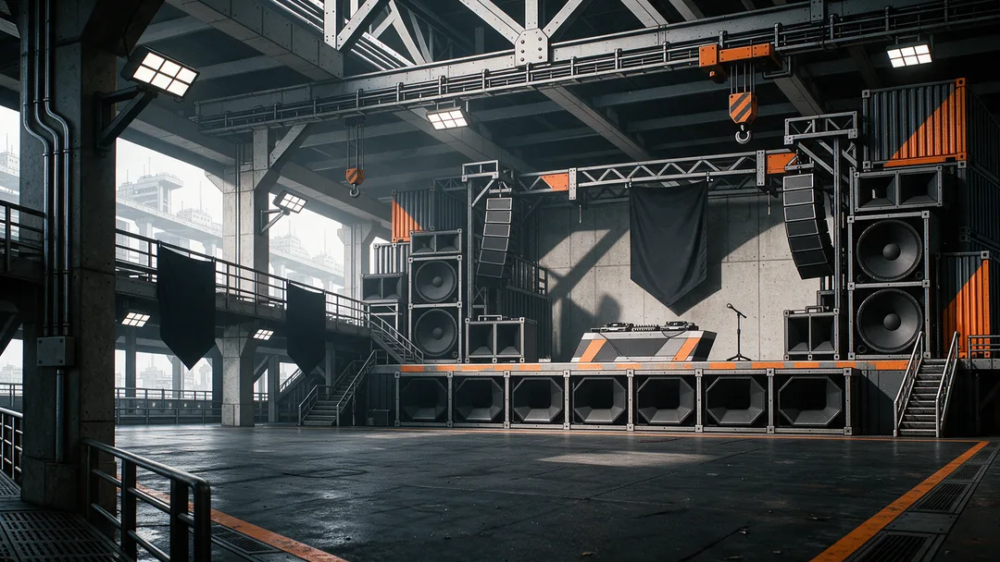
At street level, an overpass shelters a court surrounded by speakers. ROLL3RZ plays drum and bass here and sends its pirate broadcast out through rooftop aerials.
Meet L0WK3Y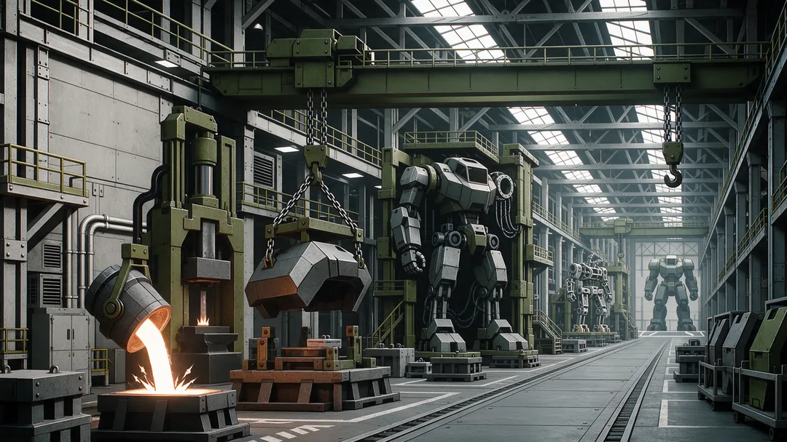
Drop hammers and molten metal fill the foundry beneath The Yard. Every racing frame passes through Factory 04, where Sasha checks it before a pilot can fly it.
Meet Sasha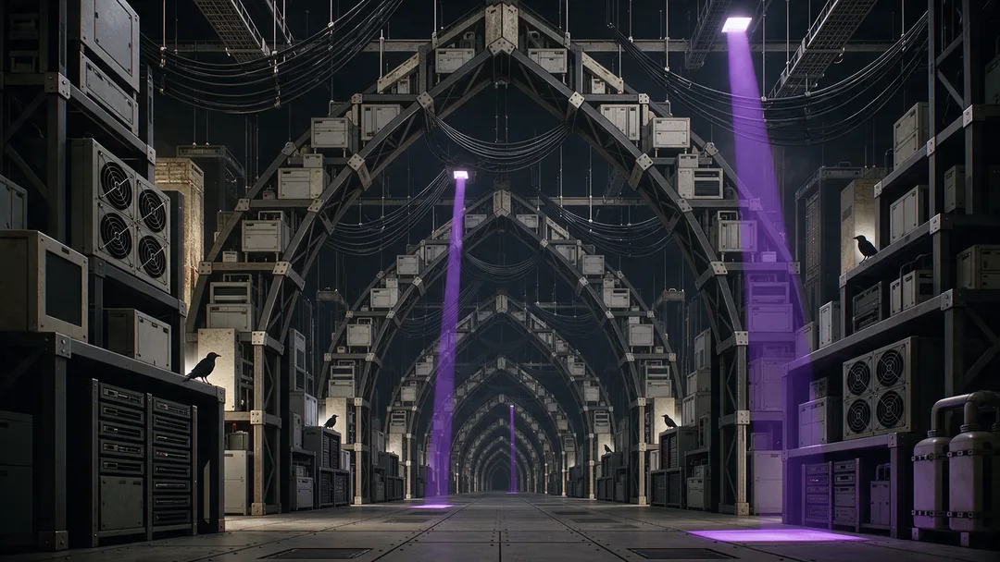
At the roots of the tower, R4V3NS keeps recordings of the old city in a cathedral built from machines. V3SP3R finds proof here that the districts once danced on the same floor.
Meet V3SP3RIn Future, rival districts settle disputes through music and racing. Machines may take damage. People come off the floor safe.
The people behind the clothes, the sounds they play, and the parts of Future they call home.
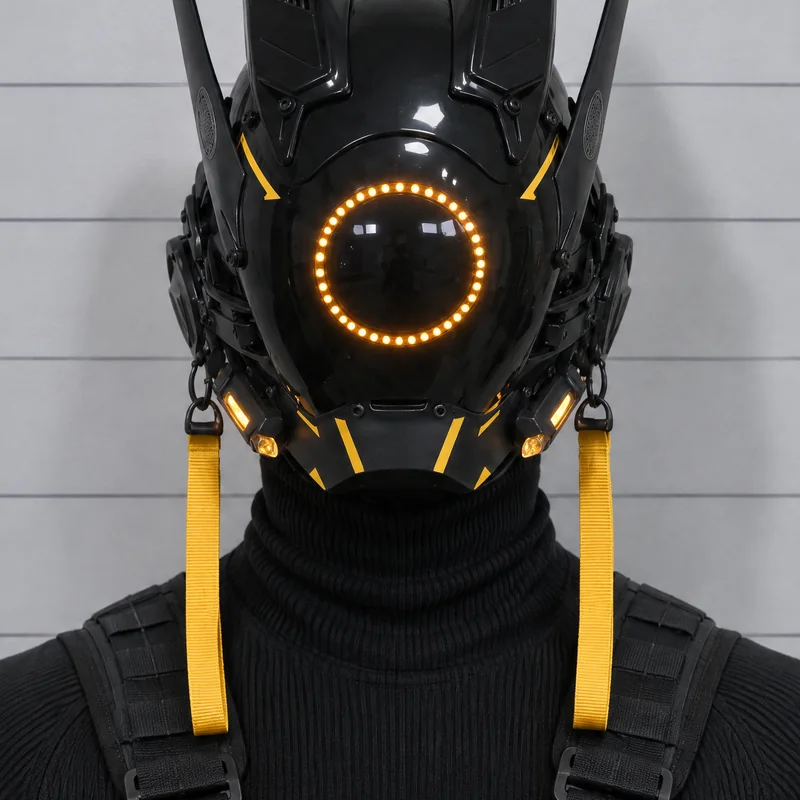
Everyone in Future knows R2’s helmet. Nobody has ever seen his face. The city’s best-known DJ and a pilot in his own right, he broadcasts short, numbered transmissions over pirate radio.
R2 belongs to no faction. He is the only DJ who plays all five district sounds in one set. His Cybercore look pairs a black chest rig and oversized pilot cargos with the amber-ring helmet that doubles as his headphones.

Sasha · Aleksandra Kuznetsova
Sasha is nineteen, half Russian and half Korean, and the youngest proof-master Factory 04 has ever had. She tests each racing frame with a tap from her small hammer. It is her first real job, and she is starting to ask what her work is being used for.
МОЛОТ means hammer. The foundry builds the city’s racing frames to the sound of hardcore. Its Warcore clothing takes its cues from workwear, with olive panels, cargo pockets, webbing and heavy boots.
Tsubasa
Tsubasa means wing. She’s the fastest racer in Future, and she acts like she knows it. Behind the bravado, she worries about being replaceable, especially when she’s asked to test a frame that can fly without her.
H4J1ME takes its name from the Japanese word for start. Its pilots race above the clouds to trance. High-visibility yellow, cropped shells, harnesses and race numbers carry The Deck into the Kurowear collection.
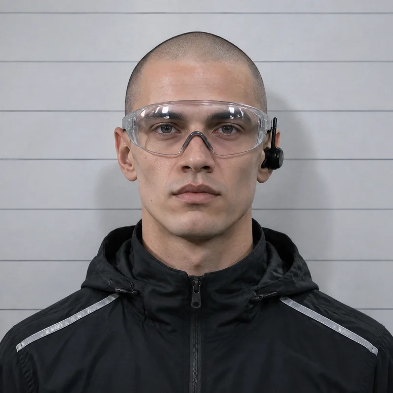
Quant
Calm, exact and usually done talking in four words, QU4NT keeps the city’s clock. A perfectionist who can’t switch off, they notice that somebody keeps resetting the districts’ schedules so their nights never overlap.
8888 writes four kicks in a bar as a name. The Grid’s minimal techno and clean silhouettes carry into the Techwear collection through precise cuts, quiet details and a restrained palette.
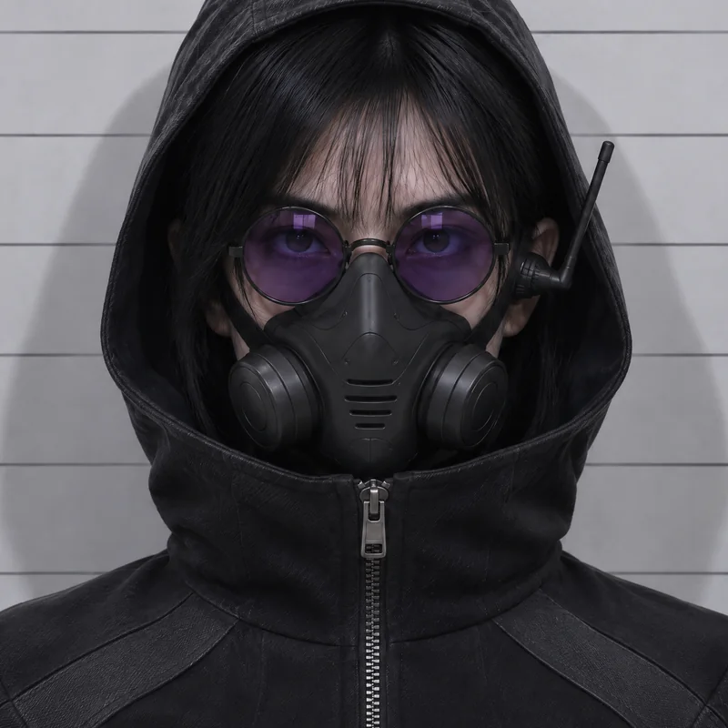
Vesper
Tall, formal and quietly kind, V3SP3R guards the city’s memory. They are shy behind the mask. L0WK3Y keeps inviting them onto the radio, and the answer is always “Perhaps next time.”
R4V3NS brings Victorian and cyber goth together under The Archive’s purple lights. Industrial music, black layers, silver hardware and a flash of ultraviolet define the Goth collection.
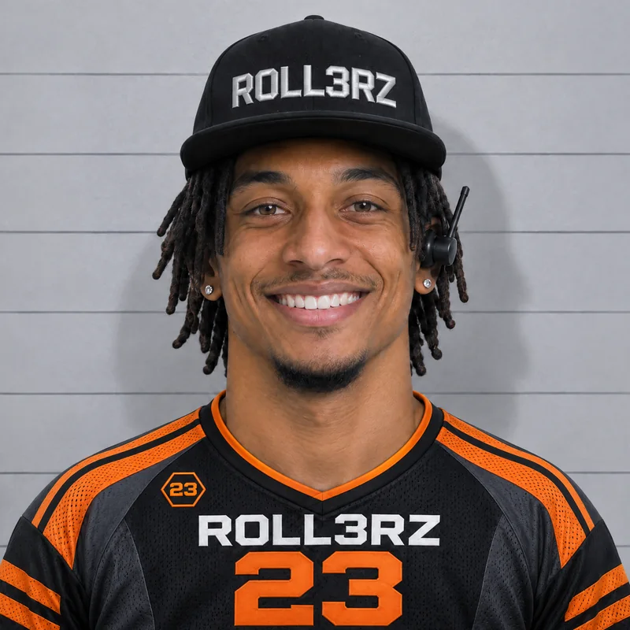
Low Key
L0WK3Y is the loudest person in the room and the one who makes sure his crew gets home. As The Yard’s captain and pirate-radio MC, he has to decide how much freedom he’s willing to give up to keep the venue open.
ROLL3RZ runs on drum and bass and team loyalty. Electric orange, oversized numbered jerseys, racing stripes and caps make up its Track Techwear look.
M0N0
Flat
FL4T is an unfailingly polite officer who apologises before asking the room to turn down the music. They believe the rules keep people safe. At The Circuit they are the first from M0N0 to take off the earpiece and join the dance.
M0N0 is faction 00, the one missing from the city’s public roster. It believes a single approved tempo would be kinder and uses licensing, curfews and clock resets to keep the districts apart. Its staff wear plain grey uniforms.
One pirate signal, six chapters, and a floor for the whole city.
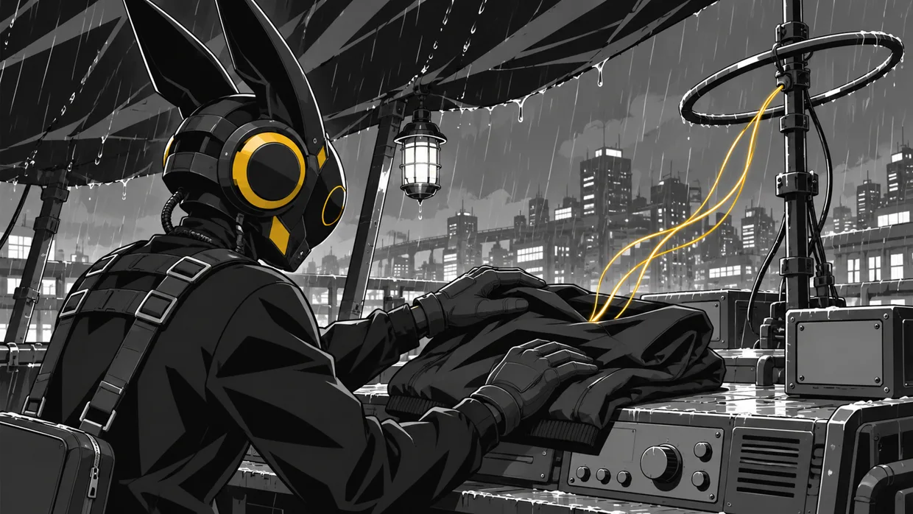
R2 discovers a pirate frequency that reaches beyond Future, all the way into our present. From a rooftop radio rig, he sends the first piece of clothing through the signal.
Character profile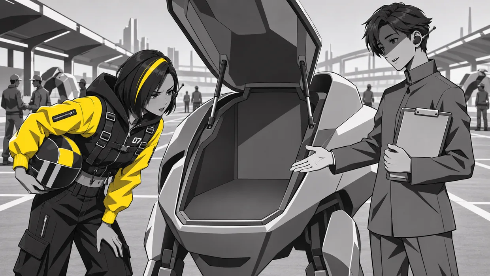
TSUB4S4 is asked to test a frame that can fly without her. Where a pilot should sit there is empty space, and the serial number begins with two zeros.
Character profileQU4NT discovers that somebody has been resetting the district clocks. The nights never line up, and people who could share a dance floor never even arrive at the same time.
Character profile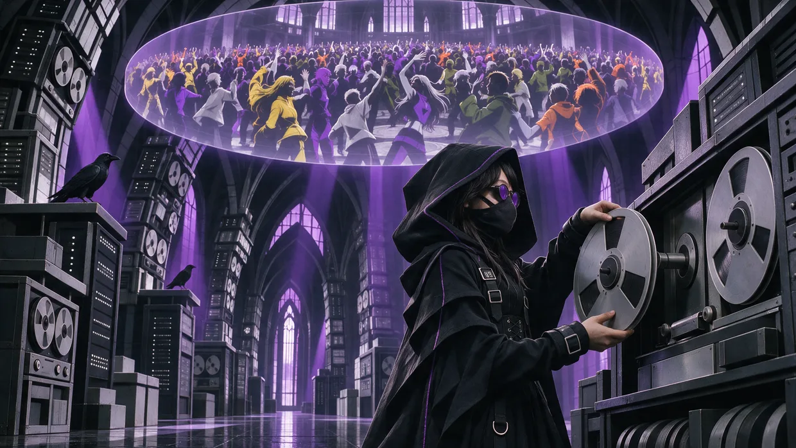
V3SP3R recovers a recording of all five districts dancing on one floor. The Circuit was closed on the grounds of safety. The order is signed M0N0.
Character profile
Sasha finds an order for a hundred racing frames with no seats. She refuses to put her proof mark on them.
Character profile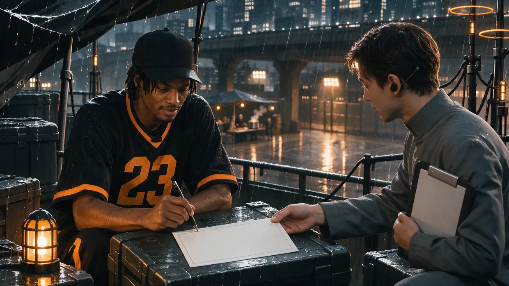
M0N0 offers L0WK3Y a licence to keep The Yard open if his station plays just one tempo. He turns it down and opens the frequency to all five districts.
Character profile
M0N0 plays its single tempo to a still room. R2 brings in all five sounds, one by one. FL4T takes off the grey earpiece and starts to dance. The DJs play back to back, and The Circuit becomes one floor again.
Character profile